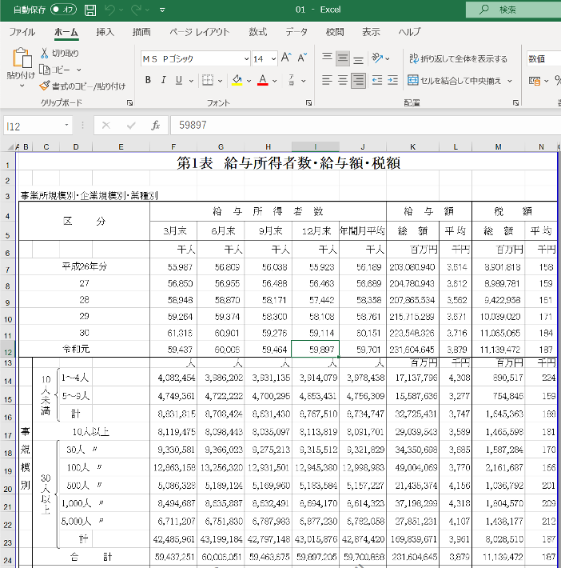

特別講義DS Ch5 データの取得と編集
データの取得と編集
これからデータをプログラム上で扱うにあたって,まずはデータについて考えてみましょう.
データは,基本的に誰かが収集・作成したものです. 自然科学においては,実験によってデータを収集し,人文・社会科学では,調査によってデータが集められます. データの作成はそれ自体でそれぞれ,実験計画法,社会調査法といった学問分野になっています.
データサイエンスは,データを利用して行う学問でセウが,データを収集・作成するのは専門知識,技能,時間,お金などが必要であり,データの作成自体が大きな仕事です.
データを自分で集めるには大変な手間がかかるので, 研究機関や,行政,大学,調査会社など他者が集めて公開しているデータを利用するのも一つの手段です. この講義では, 基本的に公開されているデータを利用して, 学習,研究を行います.
実験や調査によって集められたデータを原データといい,調査によって集められた個別の調査票などを個票といいます.
原データに統計処理を加えてまとめたものを,統計資料あるいは調査結果などと呼びます.もともと統計(statistics)という言葉は,(国家の状況に関して) 集められた原データを編集してわかりやすく加工することを意味していました. データサイエンスではしばしば原データが利用されますが,公開されているデータはこれらの統計資料である場合が多く,原データを利用するのは困難な場合が多いです.
統計資料に更に加工を加えたものを,二次統計や加工統計と呼びます.
例えば, 国税調査によって個票が収集され,統計処理を加えた統計資料が公開され, それを更に複数の統計と併せて加工することで,国民経済計算などの加工統計が作成されます.
データの尺度
データには様々な種類があり,種類ごとに利用可能な統計やデータサイエンスの手法が異なります.したがって,今後データを分析するにあたって,大まかなデータの区分を知っておく必要があります.
データの区分として,一番大きいものに 量的データ(quantitative data),質的データ(qualitative data)があります. 質的データはカテゴリーデータなどとも呼ばれます.
このどちらにも当てはまらないような,画像,音声,文字データなどの非構造データもありますが,それらはそれぞれ個別の対処手法があります.
この講義では後半で文字データを扱う自然言語処理について扱いますが,しばらくはこれらに関しては無視して,量的データと質的データを扱います.
量的データ
数量的なデータであり,データを数直線上の位置で表現できます.
- 年齢(5歳,10歳,100歳)
- 身長(150cm,170cm,200cm)
- 年収(200万円,500万円,1億円)
など基本的には,何かしらの単位で計量されます.
質的データ
あらかじめ定められたカテゴリーのいずれかに属する値を持つデータです.
- 性別(F or M)
- 犬の種類(ゴールデンレトリバー, 柴犬, プードル,など)
- 天気(晴れ,雨,曇など)
- 満足度(とても満足, まぁ満足, どちらでもない,など)
質的データと量的データは更に細かい区分として尺度(scale)に分解されます. それぞれは,｢比較が可能か｣,｢和差積商｣の計算が可能かどうかという観点で定義されます.
名義尺度(nominal scale)
質的データの中で区分にしか意味がなく順序が定義されていないもの.
- 例:氏名,性別,種類,など
和差積商のどれも定義されない.
- 例:青木 + 赤木 = 紫木 のような計算はできない.
- 青木は赤木よりも良い,大きい,などの比較もできない
順序尺度(ordinal scale)
質的データの中で順序が定義されているもの.
- 例: 満足度,成績区分(S,A,B,…)など
和差積商のどれも定義されないが比較が可能
- 例: ｢満足｣は｢不満足｣よりも満足度が高いが,
- 普通 + 普通 = 満足 のような計算はできない.
間隔尺度(interval scale)
量的データの中で,間隔は定義されているが,比率が定義されていないもの.
- 例: 時刻,日付,IQ,気温,西暦,etc
足し算引き算はできるが,掛け算割り算ができない.
- 1月1日 + 364日 = 12月31日 ですが,
- 1月1日 * 2 = 2月2日 のような計算は定義されていません.
比率尺度(ratio scale)
量的データの中で,比率が定義されているもの.
- 例: 長さ,速度,重さ,面積など
和差積商すべて計算できます.
- 10Kg + 10Kg = 20Kg
- 10Kg * 2 = 20Kg
これらの区分は今後データの処理手法を選択する際に使用するので, データがでてきたら尺度は何かを判断するようにしましょう.
演習問題
以下のデータの尺度を判断し,なぜそのように判断できるかを説明してください.
ペットの種類 (イヌ,ネコ,鳥,魚,爬虫類,その他から選択)
偏差値
電話番号
一週間に読んだ本のページ数
データの種類
これまでは一つの種類の値の区分に関して,説明してきましたが,データは複数の値の組み合わせで表現され,観測対象(ケース)別の観測項目(変数)のテーブルデータとして表現される場合が多いです.

データの観測項目の数のことを次元と呼び, 1観測項目のデータを1次元データ,2観測項目以上のデータを多次元データと呼びます.
また,観測項目や観測対象の組み合わせによって,特別に呼称され,それぞれ独自の分析手法が存在するデータもあります(時系列データと時系列解析,パネルデータと,パネルデータ分析など)

上の時系列データは,特定の時間単位で集計,区分されたデータを指しますが,データの発生時刻が記録されたデータを点過程データと呼びます. 点過程データを日毎,月ごとなどで集計することで時系列データが作成されます.
データの取得と編集
先に述べたように,データは自分で集めることもできますが,手間,時間,お金がかかるため,目的に応じて他人の集めたデータを利用することも一般的です.
現在では,無料で利用可能なデータも多数あり,この講義ではそれらのデータを利用します.
後ほど自分で選んだ研究テーマによっては自分でデータを収集することも可能です. 過去のこの講義でも, HPの視線移動データ,アンケートデータ,ヒットチャートの音楽の特徴量を表すデータ などを自分で作った事例もあります.
それらに関しては,個々の研究計画に応じて必要であれば補足的に講義内で扱います.
無料で誰でも利用可能なデータの代表として,公的統計があります. 公的統計は,国や地方自治体の作成する統計情報であり,政策立案と評価のための基礎資料として利用されており, 作成過程なども含めて一般に公開されているものが多数あります. プライバシーや個人情報保護の観点から個票は公開されていない場合が大半ですが,研究目的であれば申請して利用することも可能です.しかし,通常データが手元に来るまでに1年程度時間を要するのでこの講義では扱いません.
日本の統計情報を活用するには,“日本の統計が閲覧できる政府統計ポータルサイト”e-statがあります. e-statでは日本の各種公的統計の情報を統計別,分野別,地域別,時系列などで取得することができます.


日本以外のデータに関しては,各国の統計サイトに直接アクセスするか,あるいは国連による各種子交際期間の統計の横断検索サイトUNDataなどを利用することで取得可能です.
各国の公的統計は通常数量的なデータを扱っていますが,大学の講義や研究などで欲利用される質的データとして,World Value Surveyがあります. 世界各国の価値観に関する調査のパネルデータを提供しており, ｢人生において大切にするもの｣｢男女平等意識｣ などの調査結果が利用できます.
その他にも各種研究機関や企業が提供するデータも利用可能です.
統計ではありませんが, EDINETのWEB APIを利用して有価証券報告書のデータを取得する,Wikipediaのテキストデータを自然言語処理してデータを作成するなどもこの講義における過去の研究事例があります.
これらに関しては後ほど, Webページから自動でデータを取得するWebスクレイピングやTwitterなどのSNSの提供するAPIを利用してデータを取得する方法も扱います.
Webから取得可能な情報以外にも, 特定の組織に直接交渉してデータを活用することも可能です. この講義では千葉商科大学の授業データや,電力消費データを提供してもらい分析した事例もあります.
e-statを使ってみよう
e-statを利用して,pandasで読み込める形式のCSVを作成しましょう. 練習用なので,何を持ってきてもいいのですがここでは,｢産業別の給与｣に関するデータを取得します. 就職活動中の学生も多いかと思います. 産業別の給与はどのように異なるのでしょうか.
まずは使いたいデータを探します. 方法はいくつもありますが,ここでは分野から探してみましょう. 分野→労働・賃金→民間給与実態調査の順にクリックしてください.

データベース形式か,ファイル形式か選択することができます. データベース形式は必要なデータをブラウザ上で選択,編集してデータを取得することができます. ファイル形式は,ExcelやPDFファイルをダウンロードできます. どちらでも問題ありませんが,ここではただのExcelファイルと,pandasで読み込めるデータの違いを確認するために,ファイルをクリックしましょう.

官庁の作成する統計は,民間給与実態調査などの調査名,統計名の下位分類として,年次推計,延長推計などの提供分類,その下に対象年次,更にその下に表レベルの分類があります. これはそれぞれの統計にある程度詳しくないと意味がわからないかと思いますが,今は練習ですので気にせず,結果表の年次推計の2018年度の第1表 のExcelをクリックしましょう.

これで,民間給与実態統計調査結果表年次推計2018年度第1表 給与所得者数・給与額・税額 全国計表 がダウンロードできましたので,開いてみましょう.

省庁から取得したExcel表は,このような形態になっていることが多いですが,このデータはそのままではpandasなどで読み込める形になっていません. もちろん,データベース機能で編集したデータや2018年ではなくもっと新しいデータの場合には,ある程度利用できる形態になっていますが,このようなデータは未だに多数存在します.
ではこのデータは一体,何が駄目なのでしょうか. プログラムで利用できるデータを作成するにあたって,e-statのデータは良い悪い見本なので,e-stat全般の問題点に関して少し見ていきましょう.
先ほどダウンロードしたような形式のデータを俗にネ申Excelといいます(以降神Excelと記載).
神Excelとは,紙で印刷した際の見栄えを重視した,データとしての利用性のまったくないExcelシートです(参考:｢ネ申Excel｣問題).
例えば, 見栄えを重視するためにセルを結合する,画像を挿入する,スペースなどで幅を揃える,1セルに1文字を入力する(Excel方眼紙)などが神Excelの特徴となります.
先程の民間給与実態統計調査を見てみるとこれらの特徴が見事に当てはまります.

人間は,文字の間に空白が挟まっていてもつながった単語として認識できますが,コンピュータにはできません.また,セルが結合されている場合に表として解釈することもできません,画像も処理できません.このようなExcel表はデータとしては利用できないので,データとして形式を揃えるだけで大変な手間がかかります(このあと実際にやります).
逆に, プログラムで利用可能なデータを機械判読可能なデータといいます. 機械判読可能な分析しやすいExcelデータをまとめる基本チェック表として,以下のものが有名です(Data Organization in Spredsheets).
一貫性を保つ
- 名前の一貫性
- 記述方法の一貫性
名前の付け方
- スペースを使わない
- 意味が分かる名前をつける
- 日付の書き方をYYYY-MM-DDに
空のセルを作らない
セルに一つしかものを入れない
長方形にする
データと計算を分離する
フォントの色やハイライトをデータとして使用しない
データ検証機能を使う
CSVファイルに保存する
データをプログラムで処理するのが一般的な現代において,自分で使うためのみならず,データの価値を保つためにも機械判読可能な形式でデータを作成するように心がけましょう.Excelを使っていると,せっかくある機能を使いたくなりますができるだけデータとしての利用可能性を高める意識が必要です.
ちなみにe-statの問題点は,神Excelにとどまりません.
一番恐ろしいのは一部のデータにおいて,データベース機能に登録されている元データが神Excelのままになっていることです.
Excel表上でスペースが混じっているセルの値などがデータベース機能で編集してもそのまま出てくる場合があります.
その他にも,
- 同じ統計でも作成年毎に表記が異なる
- データの構造が統計名-提供分類-年次-表の形式になっているため,APIなどでデータを一意に絞り込めない.
- 公表が遅い
- APIにおける一部文字化けやJSONの構造が崩れている
など沢山の問題があります. 徐々に改善されているようですので,今後に期待したいところですね.
機械判読可能データの作成
では,e-statからダウンロードしたデータを編集して, 機械判読可能なBOM付きUTF-8のCSVに変換してみましょう. ここでは, Execelを用いて行います.
今回ダウンロードしたデータの中で扱いたいのは,業種別の給料です.
それ以外の邪魔な情報は削除しましょう(コピーして別のシートに貼り付けた方が早いです).
新しいファイルを作成し,一行目にHeaderとして,industry, salary と記入しましょう.
日本語でも大丈夫ですが英語の方が安心です.
しかし,業種名を他のファイルにそのまま貼り付けようとすると,セルが結合されているためうまくいきません.このままでは,プログラムで上手く処理できないので編集します.
ダウンロードしたファイルの業種の部分をコピーしたら,新しいファイルのindustry の下のセルを右クリックして｢値だけ貼り付け｣をしましょう. 一部の行の中に句読点が入っていますがこれもエラーのもととなるので,編集します.

プログラムは基本的に英語の利用を想定されているのでデータも英語の方が安定します.
日本語でも問題ない場合が大半なので,日本語のままでも良いですが,プログラム記述中に日本語と英語が混ざるとエラーの原因となりやすいので,文章自体に意味があるテキストデータなどを除いて可能な限り英語に変換しておくことをおすすめします.
自分で適切な英語に変換できない場合はExcelでは翻訳したいセルを右クリックして翻訳を選ぶと翻訳してくれます. Excelでは現状自分でコピーアンドペーストしなければなりません.
Google Sheetなど使うと一発で全て変換する関数 GoogleTranslate などがあります.

CSVでデータを詠み込む場合, 空白,コンマ,Tabなどはエラーになりやすいので,可能な限り消しましょう. 特に今回の業種データは｢電気･ガス･熱供給・水道業｣ などなぜか中点を利用しているものもあれば,句点で区切られているものもあり,意味が分かりません. 長過ぎるのも問題が起きやすいので,頭文字のみにするなどわかりやすい形に変更しましょう(電気･ガス･熱供給・水道業 → インフラ, 卸売,小売業 → 商業 など)
再度に作成されたデータをCSVとして保存して終了です.保存する際のデータ型式にCSV UTF-8があるのでそれを選択し, ｢salary.csv｣という名前で作業ディレクトリのDataフォルダに保存します.
pandasによるデータ処理
ここから,先ほど作成したデータを利用してpandasの基本的な機能について確認していきます. いくつもの処理を一気に扱いますが,すべて暗記する必要はありません. ただし,それぞれの処理の存在を覚えるようにしましょう. 可能な処理やその名前を覚えておけば,この資料に戻る,あるいは検索して調べることで自分で利用できます. 取り敢えず,講義内ではそれぞれの処理が何をやっているのかの概要を掴み,体験してみましょう.
ファイルの読み込み
先程作成したデータを作業ディレクトリのdataフォルダに保存して,Pythonで読み込んでみます.
以下,salary.pyというファイルを作成してプログラムを追記していきます.
スクリプトのファイル名は,中身がなにか後で見ても分かるような英数字であれば何でも構いません.
ただし, pandas,numpy,matplotlibなどの今後利用するライブラリと同名のスクリプトを作成すると,
正常にライブラリを利用できなくなるので注意しましょう.
以下の用に import pandas as pd でpandasをimportしたあとに, pd.read_csv('ファイルパス')でファイルが読み込めます. また,同じ行で読み込んだファイルをdfという変数に代入しています.
最後の行で読み込んだファイルを表示しています.
最初のうちは自分で作成するプログラムにも以下の例の用に,それぞれの行で何をしているのかコメントを書くようにしましょう.
# pandas を import し, pdと呼ぶという意味
# pandas はデータの読み込みなどに利用します
import pandas as pd
#------------------------------------------------------------------
# データの読み込み
#------------------------------------------------------------------
# CSVファイルを読み込んでデータフレーム(後述)に格納
# pd.関数名 でpandasの関数が利用できる
# Dataフォルダを作成し,そこにデータを入れておきましょう
# data/salary_data.csv は data フォルダの salary.csv という意味
df = pd.read_csv('data/salary.csv')
print(df)正しくプログラムをデータが作成できていれば,プログラムを実行することで以下のようにデータの中身が標準出力に表示されるはずです. プログラムを記述する際には,このようにところどころで,print()を利用して,自分のイメージしたとおりにデータが編集されているか確認する癖をつけるようにしましょう.
❯ python3 salary.py
industry salary
0 Construction 4503
1 Manufacturing 4756
2 Wholesale 3186
3 Accomodation 1949
4 Finance 5711
5 Real Estate 3786
6 Transport 3909
7 Energy 8199
8 Info 5337
9 Edu 3913
10 Med 4144
11 Other 4239
12 Suervice 3086
13 AFFC 2190pandasでは主にDataFrameというデータ型を利用してデータを扱います.
DataFrameオブジェクトには様々な機能が実装されており,様々な形に変形することができますが,基本的には以下の3属性から成っています.
values : データ部分 n × m の行列
columns: 列名, header情報
index: 行名

クラスの属性にはオブジェクト名.属性名でアクセスできます. 以下のコードを追加して実行し,それぞれどのように表示されるか確認してみましょう.
# dfのvalues属性を表示したい場合
print(df.values)
#dfのcolumns属性を表示したい場合
print(df.columns)
#dfのindex属性を表示したい場合
print(df.index)[['Construction' 4503]
['Manufacturing' 4756]
['Wholesale' 3186]
['Accomodation' 1949]
['Finance' 5711]
['Real Estate' 3786]
['Transport' 3909]
['Energy' 8199]
['Info' 5337]
['Edu' 3913]
['Med' 4144]
['Other' 4239]
['Suervice' 3086]
['AFFC' 2190]]
Index(['industry', 'salary'], dtype='object')
RangeIndex(start=0, stop=14, step=1)データの確認
DataFrameを読み込んだらまずは,その全体像と特徴を確認しましょう. 確認すべき項目として,columnsやindexの他に以下のようなものがあります.
- データの中身
データが長い場合は標準出力には省略して表示されます.
意図的に,先頭n行を取得したい場合にはdf.head(n)を利用します.
後ろからn行を取得したい場合にはdf.tail(n)を利用します.
print('head --- \n',df.head(5))
print('tail --- \n',df.tail(5))head ---
industry salary
0 Construction 4503
1 Manufacturing 4756
2 Wholesale 3186
3 Accomodation 1949
4 Finance 5711
tail ---
industry salary
9 Edu 3913
10 Med 4144
11 Other 4239
12 Suervice 3086
13 AFFC 2190データの形
df.shapeでデータの行数,列数を取得できます.len(df)でデータの長さ(行数)を確認できます.
#形の確認
print(df.shape)
print(len(df))(14, 2)
14- 記述統計量
df.describe()を利用することで データ数(count),平均(mean), 母標準偏差(std),最大値(max),最小値(min), 四分位数(25%,50%,75%)などの特徴量が把握できます.
df[列名].max()で最大値,df[列名].mean()で列の平均,df[列名].median()で中央値など個別に把握することも可能です.
#特徴量の把握
print(df.describe())
print('最大値:',df['Salaray'].max())
print('平均値:',df['Salaray'].mean())
print('中央値:',df['Salary'].median()) salary
count 14.000000
mean 4207.714286
std 1561.247008
min 1949.000000
25% 3336.000000
50% 4028.500000
75% 4692.750000
max 8199.000000
最大値:8199.000000
平均値:4207.714286
中央値:4028.500000行名,列名の変更
columnsとindexは任意の値を設定できます(ただし重複はなし). リストでそれぞれの属性を更新することで新しい列名,行名を指定できます.
- 列名の変更
df.columns = [新しい列名のリスト]
- 行名の変更
df.index = [新しい行名のリスト]
試しに列名を['Ind','Sal']に,行名をa~nのアルファベットに変更してみましょう.
#列名の変更
df.columns = ['Ind','Sal']
#行名の変更
df.index = ['a','b','c','d','e','f','g','h','i','j','k','l','m','n']
print(df)指定した通りに列名や行名が変更されていれば成功です.
Ind Sal
a Construction 4503
b Manufacturing 4756
c Wholesale 3186
d Accomodation 1949
e Finance 5711
f Real Estate 3786
g Transport 3909
h Energy 8199
i Info 5337
j Edu 3913
k Med 4144
l Other 4239
m Suervice 3086
n AFFC 2190ただし,indexは0から始まる連番を利用するのが一般的なので,むやみに文字などにしないほうが良いです. indexに0から始まる連番を振り直すには,.reset_index()メソッドを利用するのが一般的です.
#元の連番に戻す
## ()の中に inplace = True と書くことでdfのindexが変更される
## inplace=Trueを書かないと変更されません.
## drop = True と書くことで,変更前に使用していたindexが消去されます.
## drop = False の場合先ほどのアルファベットが列として残ります.
df.reset_index(inplace=True,drop=True)
print(df)実行結果
Ind Sal
0 Construction 4503
1 Manufacturing 4756
2 Wholesale 3186
3 Accomodation 1949
4 Finance 5711
5 Real Estate 3786
6 Transport 3909
7 Energy 8199
8 Info 5337
9 Edu 3913
10 Med 4144
11 Other 4239
12 Suervice 3086値の抽出
valuesにアクセスする方法は多数存在し,用途によって使い分けます.
列の指定は,df['列名']あるいはdf.列名のように記述することで指定するのが最も単純な方法です.
dfの'Ind'列を抽出したい場合にはdf['Ind']あるいはdf.Indと書きます.
#列の指定(Ind列)
print(df['Ind'])
#列の指定(Sal列)
print(df.Sal)実行結果
0 Construction
1 Manufacturing
2 Wholesale
3 Accomodation
4 Finance
5 Real Estate
6 Transport
7 Energy
8 Info
9 Edu
10 Med
11 Other
12 Suervice
13 AFFC
Name: Ind, dtype: object
0 4503
1 4756
2 3186
3 1949
4 5711
5 3786
6 3909
7 8199
8 5337
9 3913
10 4144
11 4239
12 3086
13 2190
Name: Sal, dtype: int64X列の,Y行のように範囲選択したい場合にはdf.loc[行番号,列名]と書きます.
また,行名,列名それぞれにスライスを利用することでの,X~Y列のV~W行のような指定ができます.
スライスで表せない行名や列名を指定する場合には,それぞれに抜き出したい列や行のリストを渡します.
#範囲指定(3行目,'Sal'列)
print(df.loc[3,'Sal'])
#スライスを利用した範囲指定
print(df.loc[3:5,'Ind':'Sal'])
#リストを利用した範囲指定
print(df.loc[[2,4,7],['Ind','Sal']])実行結果
1949
Ind Sal
3 Accomodation 1949
4 Finance 5711
5 Real Estate 3786
Ind Sal
2 Wholesale 3186
4 Finance 5711
7 Energy 8199特定の一つのセルにアクセスする場合にはlocを利用することもできますが,df.at[行名,列名]を使うほうが高速です.
#atによる単独のセルの指定
print(df.at[3,'Sal'])実行結果
1949行名や列名ではなく,行番号,列番号による指定も可能です. 行番号,列番号は行名や列名とは無関係に,0から始まる連番として指定されています.
範囲選択はdf.iloc[行番号,列番号],単独の値はdf.iat[行番号,列番号]で行うことができます.
#行番号,列番号による範囲指定
print(df.iloc[3:5,0:])
#行番号,列番号による単独のセルの指定
print(df.iat[3,1])実行結果
Ind Sal
2 Wholesale 3186
4 Finance 5711
7 Energy 8199
1949- 演習問題
以下の画像における範囲①~③を一度に抽出してください.
単独の値を抜き出す際には.at,.iatメソッドを利用しましょう.
条件による抽出
Excelにおけるフィルター機能のように,pandasでも条件による値の抽出が可能です.
pandsでは,DataFrameオブジェクトに,真偽値のリストを渡すと,Trueの行のみを抜き出すことができます.
以下のコードでは,FalseとTrueを交互に繰り返し,奇数行のみを抜き出しています.
#真偽値のリストによる抜き出し
bools = [False,True] * 7
print(bools)
print(df[bools])実行結果
[False, True, False, True, False, True, False, True, False, True, False, True, False, True]
Ind Sal
1 Manufacturing 4756
3 Accomodation 1949
5 Real Estate 3786
7 Energy 8199
9 Edu 3913
11 Other 4239
13 AFFC 2190DataFrameオブジェクトに対して,真偽値計算をすると,各行に対する真偽値計算の結果が帰ってきます.
以下のコードでは,Salaryが3000以上の行のみTrueの値が帰ってきているのが確認できます.
#DataFrameオブジェクトに対する論理演算
print(df['Sal'])
print(df['Sal'] >= 3000)実行結果
0 4503
1 4756
2 3186
3 1949
4 5711
5 3786
6 3909
7 8199
8 5337
9 3913
10 4144
11 4239
12 3086
13 2190
Name: Sal, dtype: int64
0 True
1 True
2 True
3 False
4 True
5 True
6 True
7 True
8 True
9 True
10 True
11 True
12 True
13 False
Name: Sal, dtype: boolこの①BoolのリストをDataFrameに渡すとTrueの行が返ってくる,②DataFrameに論理演算を行うとBoolのリストが返ってくるという機能の2つを組み合わせて,条件抽出を行うことができます.
例えば,Sal列から3000以上の行のみを抜き出すには以下のように書きます.
1行のプログラムですが,いくつかの機能を組み合わせているので,どの部分で何が起きているのかを分解して理解するようにしましょう.
#DataFrameオブジェクトに対する条件抽出
print(df[df['Sal'] >= 3000]['Sal'])実行結果
Name: Sal, dtype: bool
0 4503
1 4756
2 3186
4 5711
5 3786
6 3909
7 8199
8 5337
9 3913
10 4144
11 4239
12 3086
Name: Sal, dtype: int64- 演習
Salary.csvから以下の条件に従った抽出を行ってください.
Sal列が偶数のSal列の行Sal列が奇数のInd列の行Ind列がInfo,Eduのいずれかで,Sal列が4000以上のSal列
値の変更
DataFrameでは選択したセルなどに=を利用して代入することで,値の更新が可能です.
以下のコードで,どの部分が変更されているか,コードと結果の対応関係を見てみましょう.
print(df)
df.at[1,'Sal'] = 0
print(df)実行結果
Ind Sal
0 Construction 4503
1 Manufacturing 4756
2 Wholesale 3186
3 Accomodation 1949
4 Finance 5711
5 Real Estate 3786
6 Transport 3909
7 Energy 8199
8 Info 5337
9 Edu 3913
10 Med 4144
11 Other 4239
12 Suervice 3086
13 AFFC 2190
Ind Sal
0 Construction 4503
1 Manufacturing 0
2 Wholesale 3186
3 Accomodation 1949
4 Finance 5711
5 Real Estate 3786
6 Transport 3909
7 Energy 8199
8 Info 5337
9 Edu 3913
10 Med 4144
11 Other 4239
12 Suervice 3086
13 AFFC 2190範囲の変更は,同じ形のリストを渡すことで可能です.
#範囲の変更
df.loc[3:5,'Sal'] = [1,2,3]
print(df) Ind Sal
0 Construction 4503
1 Manufacturing 0
2 Wholesale 3186
3 Accomodation 1
4 Finance 2
5 Real Estate 3
6 Transport 3909
7 Energy 8199
8 Info 5337
9 Edu 3913
10 Med 4144
11 Other 4239
12 Suervice 3086
13 AFFC 2190リストではなく,単一の値を渡すと一括で変更されます.
#一括変更
df.loc[3:5,'Sal'] = 4
print(df) Ind Sal
0 Construction 4503
1 Manufacturing 0
2 Wholesale 3186
3 Accomodation 4
4 Finance 4
5 Real Estate 4
6 Transport 3909
7 Energy 8199
8 Info 5337
9 Edu 3913
10 Med 4144
11 Other 4239
12 Suervice 3086
13 AFFC 2190- 配列のコピーと変更
リストの節でも説明しましたが,pandasのDataFrameは,別の変数に代入して,そのDataFrameの値を変更すると元のDataFrameの値も変更されます.
df2 = df
df2['Sal'] = 0
print('df --- \n',df)
print('df2 --- \n', df2)dfをdf2に代入して,df2の値を変更すると,元のdfの値も変更されていることが確認できます.
df ---
Ind Sal
0 Construction 0
1 Manufacturing 0
2 Wholesale 0
3 Accomodation 0
4 Finance 0
5 Real Estate 0
6 Transport 0
7 Energy 0
8 Info 0
9 Edu 0
10 Med 0
11 Other 0
12 Suervice 0
13 AFFC 0
df2 ---
Ind Sal
0 Construction 0
1 Manufacturing 0
2 Wholesale 0
3 Accomodation 0
4 Finance 0
5 Real Estate 0
6 Transport 0
7 Energy 0
8 Info 0
9 Edu 0
10 Med 0
11 Other 0
12 Suervice 0
13 AFFC 0これは割り当てられるメモリの大きなDataFrameを効率的に利用するための仕様ですが,仕様を理解していないと思わぬ結果となるので注意してください.
print('id df:',id(df))
print('id df2:',id(df2))実行結果
id df: 5013939024
id df2: 5013939024大きなデータを扱う際に,部分的に抜き出したデータに編集を加えて,元のデータを変更したくない場合があります.そのような場合には,.copy()メソッドを利用します..copy()メソッドを利用することで,元のデータとは異なるメモリが割り当てられます.
#元のDataFrameを保つコピー
## 一度変更を元に戻す
df = pd.read_csv('data/salary.csv')
df.columns = ['Ind','Sal']
df2 = df.copy()
df2['Sal'] = 0
print('df --- \n',df)
print('df2 --- \n', df2)
print('id df:',id(df))
print('id df2:',id(df2))実行結果
df ---
Ind Sal
0 Construction 4503
1 Manufacturing 4756
2 Wholesale 3186
3 Accomodation 1949
4 Finance 5711
5 Real Estate 3786
6 Transport 3909
7 Energy 8199
8 Info 5337
9 Edu 3913
10 Med 4144
11 Other 4239
12 Suervice 3086
13 AFFC 2190
df2 ---
Ind Sal
0 Construction 0
1 Manufacturing 0
2 Wholesale 0
3 Accomodation 0
4 Finance 0
5 Real Estate 0
6 Transport 0
7 Energy 0
8 Info 0
9 Edu 0
10 Med 0
11 Other 0
12 Suervice 0
13 AFFC 0
id df: 5013945696
id df2: 4559223920- 演習
作成したsaraly.csvを読み込み,以下の処理を順に行ってください.
columnsを日本語(産業,給与)に変更してください.
サービス業だと思われる行のみを抽出して,
.copy()してください.コピーされたDataFrameに0から始まるインデックスを振り直してください.
元のDataFrameとコピーされたデータフレームの中身とidを確認してください.
データ型の確認と変更
pandasでデータを読み込むと列ごとに自動でデータ型が推論,設定されます. pandasのDataFrameにおけるデータ型(dtype)はこれまでに見てきたpythonの標準的なデータ型(type)とは異なるものですが,同じ名前でも変更が可能です. ただし,str型だけ扱いが特殊なので注意が必要です.
pandasの列ごとのデータ型を確認するには,.dtypesを利用します.
typeのintに対応するdtypeはint64,floatはfloat64と表示されます. str型は,object型になりますがそれぞれの要素はstr型です.
print('DataFrameのデータ型:\n',df.dtypes)
print('Sal列のデータ型:',df['Sal'].dtypes)
print('Ind列のデータ型:',df['Ind'].dtypes)
print('Ind列の要素のデータ型:',type(df.at[0,'Ind']))DataFrameのデータ型:
Ind object
Sal int64
dtype: object
Sal列のデータ型: int64
Ind列のデータ型: object
Ind列の要素のデータ型: <class 'str'>.astype()メソッドでデータ型を変更することができます. 元の列に代入する形で変更しましょう.
今回は,Sal列をint型からfloat型に変更します.
#データ型の変更
df['Sal'] = df['Sal'].astype(float)
print('Sal列のデータ型:',df['Sal'].dtypes)Sal列のデータ型:float64データを読み込む際に,dtyp=列名とデータ型の辞書を記述することで,データ型を指定することも可能です.
#読み込み時のデータ型の指定
df = pd.read_csv('data/salary.csv'
,dtype = {'Industry':str
,'Salary':float})
df.columns = ['Ind','Sal']
print(df.dtypes)Ind object
Sal float64
dtype: objectDataFrameの作成
これまでは,salary.csvを読み込んでDataFrameとして編集してきましたが,プログラム内で新たなDataFrameを作成することも可能です.
新たなDataFrameを作成するためには,pd.DataFrame()メソッドを利用します.丸括弧内には, data, index, columnsを設定する必要があります. ただし, indexとcolumnsは省略可能です.
dataには,必要な行×列の多次元リスト, indexとcolumnsには1次元のリストを渡します.
以下の表のようなDataFrameを作成するコードは次のようになります.
#DataFrameのvalues部分をリストで作成する
## 行のリストになっていることに注意
#DataFrameのvalues部分をリストで作成する
## 行のリストになっていることに注意
values = [['dog',5.0,60.0]
,['cat',3.0,30.0]
,['fish',0.15,0.5]]
#DataFrameの作成
df = pd.DataFrame(data=values
,columns=['animal_kind'
,'weight'
,'size'])
print(df) animal_kind weight size
0 dog 5.00 60.0
1 cat 3.00 30.0
2 fish 0.15 0.5行のリストよりも列のリストを渡すほうがデータ型が統一されており簡単です.
そのような場合には,数値計算用ライブラリnumpyの.Tを利用して,転置行列を渡します.
Shell上でpip install numpyを実行して, numpyをinstallしたのち,import numpy as npと記述して
numpyをプログラムで利用しましょう.
numpyでは,ndarray配列というデータ型を利用します.そのため,np.array()メソッドで一度ndarrayに変換し,
.Tによって転置した配列を.tolist()メソッドでリストに戻しています.
#転置行列によるデータの作成
import numpy as np
animal_kinds = ['dog','cat','fish']
weights = [5.0,6.0,0.15]
sizes = [60.0,30.0,0.5]
values = np.array([animal_kinds
,weights
,sizes]).T.tolist()
df = pd.DataFrame(data=values
,columns=['animal_kind'
,'weight'
,'size'])
df['weight'] = df['weight'].astype(float)
df['size'] = df['size'].astype(float)
print(df)実行結果
animal_kind weight size
0 dog 5.0 60.0
1 cat 6.0 30.0
2 fish 0.15 0.5また,列名をkeyその列のリストをvalueとした辞書型によってDataFrameを作成することも可能です.
df = pd.DataFrame({'animal_kind':['dog','cat','fisg']
,'weight':[5.0,6.0,0.15]
,'size':[60.0,30.0,0.5]})
print(df)実行結果
animal_kind weight size
0 dog 5.0 60.0
1 cat 6.0 30.0
2 fish 0.15 0.5- 演習
以下のdataをもつDataFrameを作成し,age列をfloat64に変更しましょう.
| name | age |
|---|---|
| Taro | 20 |
| Jiro | 30 |
| Hanako | 40 |
データの追加と削除
列や行の追加には.assine()や.insert(),.append()などが利用可能ですがここでは分かりやすく代入を利用する方法を紹介します.
df[新規列名]=新しい列,のようにDataFrameに新しい列を代入することで列の追加が可能です.行の追加はdf.loc[追加したいindex] = 新しい行で行えます.
#データの追加
#列の追加
print('追加前:\n',df)
df['name'] = ['pochi','tama','kintaro']
print('列の追加:\n',df)
df.loc[4] = ['bird',1.0,3,'piyo']
print('行の追加:\n',df)追加前:
animal_kind weight size
0 dog 5.0 60.0
1 cat 6.0 30.0
2 fish 0.15 0.5
列の追加:
animal_kind weight size name
0 dog 5.0 60.0 pochi
1 cat 6.0 30.0 tama
2 fish 0.15 0.5 kintaro
行の追加:
animal_kind weight size name
0 dog 5.0 60.0 pochi
1 cat 6.0 30.0 tama
2 fish 0.15 0.5 kintaro
4 bird 1.0 3 piyo特定の列の値を利用して計算された新たな列を作成することも可能です.ここでは,sizeあたりのweightを計算してみます. 列を用いた計算では各行の値が計算されます.
#列を利用した計算
df['density'] = df['weight'] / df['size']
print(df) animal_kind weight size name density
0 dog 5.00 60.0 pochi 0.083333
1 cat 6.00 30.0 tama 0.200000
2 fish 0.15 0.5 kintaro 0.300000
4 bird 1.00 3.0 piyo 0.333333列や行を削除するには.drop(行名 or 列名, axis= 0/1 )を利用します.行を削除する場合はaxis=0,列を削除する場合にはaxis=1と書きます. axis='column',axis='index'でも行と列を選択することができます.
inplace = True を設定すると元のDataFrameが変更されますが,設定しないと新しいDataFrameが返され,元のDataFrameは変更されません.
#列の削除
df.drop('name'
,axis='columns' # or axis = 1
,inplace=True)
print(df)
#行の削除
df.drop(4
,axis='index' # or axis = 0
,inplace=True)
print(df) animal_kind weight size density
0 dog 5.00 60.0 0.083333
1 cat 6.00 30.0 0.200000
2 fish 0.15 0.5 0.300000
4 bird 1.00 3.0 0.333333
animal_kind weight size density
0 dog 5.00 60.0 0.083333
1 cat 6.00 30.0 0.200000
2 fish 0.15 0.5 0.300000行名や列名にリストを指定すると,複数行/列が削除されます.
#複数行の削除
print(df.drop(['weight','size','density'],axis=1)) animal_kind
0 dog
1 cat
2 fish欠損値の処理
例えば特定の日だけ値を入力し忘れている出勤簿や授業をサボった学生の成績など,現実のデータには抜けや欠損が付き物です. 抜けや欠損の無いデータを完備データといい,欠損している部分を欠損値といいます.
pandasでは,csvの空白, 作成時の未定義部分 などが欠損値NaN(Not a Number) として表現されます.
例えば,DataFrame作成時にvaluesのサイズが合わない場合にはデータのない部分がNaNとなります.
また,以下のように空白のあるCSVを読み込んだ場合には空白のセルがNaNとなります.

#DataFrameの作成
df = pd.DataFrame(data = [['dog',5,60]
,['cat',30]
,['fish',0.15]]
,columns=['animal_kind'
,'weight'
,'size'])
print(df)
#かけたデータの読み込み
df = pd.read_csv('data/salary_nan.csv')
print('-----\n',df) animal_kind weight size
0 dog 5.00 60.0
1 cat 30.00 NaN
2 fish 0.15 NaN
-----
Industry Salary
0 Construction 4503.0
1 Manufacturing 4756.0
2 Wholesale 3186.0
3 Accommodation NaN
4 Finance 5711.0
5 Real Estate 3786.0
6 Transport 3909.0
7 Energy 8199.0
8 Info NaN
9 Edu 3913.0
10 Med 4144.0
11 Other NaN
12 Suervice 3086.0
13 AFFC 2190.0NaNはすべての値に対して,==でTrue,!=でFalseを返すため,欠損値か否かの判定には,==や!=を使うことはできません. なお,float('NaN')でfloat型のNaNを生成できます.
df = pd.read_csv('data/salary_nan.csv')
print(df.at[8,'Salary'])
print('NaN == 1:',df.at[8,'Salary'] == 1)
print('NaN == NaN:',df.at[8,'Salary'] == float('NaN'))
print('NaN != 1:',df.at[8,'Salary'] != 1)
print('NaN != NaN:',df.at[8,'Salary'] == float('NaN'))nan
NaN == 1: False
NaN == NaN: False
NaN != 1: True
NaN != NaN: False欠損値の判定にはisna()メソッドを利用します.DataFrameに利用することでNaNのあるセルにはTrue,NaN以外のセルにFalseを返します.また,pd.isna(値)の形で,値の判定も可能です.
df = pd.read_csv('data/salary_nan.csv')
print(df.isna())
print(pd.isna(df.at[8,'Salary'])) Industry Salary
0 False False
1 False False
2 False False
3 False True
4 False False
5 False False
6 False False
7 False False
8 False True
9 False False
10 False False
11 False True
12 False False
13 False False
True欠損のあるデータを分析する際には,欠損値をどのように処理するかを決める必要があります.
欠損値の処理の方法には除外, 置換, 補定(ほてい),補完などいくつかの方法があり,pandasにおいても
dropna(),fillna()などのメソッドが提供されています.
元も単純な欠損値の処理方法は,欠損値のある行や列を除外してしまうことです. pandasにおいて欠損値の除外行うメソッドはdropna()です.
df.dropna(subset=除外したい列名のリスト,how=‘any’,inplace=True)と記述することで
指定された列においてNaNの含まれる行の削除ができます.
subsetを指定しないと,すべての列が対象となります.
how ='any'と指定すると, subsetに含まれる列のどれか, how='all'にすると, subsetに含まれる列の全てがNaNの場合にその行が削除されます.
#欠損値の削除
print(df.dropna(subset=['Salary'],how='any'))
print('---\n',df) Industry Salary
0 Construction 4503.0
1 Manufacturing 4756.0
2 Wholesale 3186.0
4 Finance 5711.0
5 Real Estate 3786.0
6 Transport 3909.0
7 Energy 8199.0
9 Edu 3913.0
10 Med 4144.0
12 Suervice 3086.0
13 AFFC 2190.0
---
Industry Salary
0 Construction 4503.0
1 Manufacturing 4756.0
2 Wholesale 3186.0
3 Accommodation NaN
4 Finance 5711.0
5 Real Estate 3786.0
6 Transport 3909.0
7 Energy 8199.0
8 Info NaN
9 Edu 3913.0
10 Med 4144.0
11 Other NaN
12 Suervice 3086.0
13 AFFC 2190.0inplace = True と設定するともとのDataFrameが変更されますが Falseに設定すると, もとのDataFrameには反映されません.
df.dropna(subset=['Salary']
,how='any'
,inplace=True)
print(df) Industry Salary
0 Construction 4503.0
1 Manufacturing 4756.0
2 Wholesale 3186.0
4 Finance 5711.0
5 Real Estate 3786.0
6 Transport 3909.0
7 Energy 8199.0
9 Edu 3913.0
10 Med 4144.0
12 Suervice 3086.0
13 AFFC 2190.0データの保存
pandasで作成, 加工したDataFrameオブジェクトは, csv等の形式でファイルに書き出すことができます.
DataFrameオブジェクトdfをcsvファイルとして書き出すにはdf.to_csv('ファイルパス') と記述します. encoding=を追加して記述することでエンコードを指定することも可能です.
BOM付きのUTF-8の場合はencoding='utf-8-sig'と記述します.
values = [['dog',5.0,60.0]
,['cat',3.0,30.0]
,['fish',0.15,0.5]]
#DataFrameの作成
df = pd.DataFrame(data=values
,columns=['animal_kind'
,'weight'
,'size'])
#csvとして保存
df.to_csv('data/animal.csv'
,encoding='utf-8-sig')pandasで可能なデータの処理のうち,今回紹介したのは基本となるほんの一部です.ライブラリの活用方法や機能は日々増えており, 全部を扱うことはできません.必要に応じて自分で利用方法を調べて学習しましょう.
データの取得と編集全体の演習
演習問題
- データの作成と編集
以下の条件に従うDataFrameを作成してください.
columnsが’
1‘,'2','3','4',’5’indexが
0~19‘
1’列の値はindexの1倍,'2'列の値はindexの2倍,'3'列の値はindexの3倍,'4'列の値はindexの4倍,’5’列の値はindexの5倍の値が入る.
作成したDataFrameに以下の操作を加えてください.
'3'列を2倍した'6'という列を追加してください.indexが20となる行を追加してください'mean'という各行の平均値からなる列を追加してくださいindexが偶数の列のみを残して,すべての列をint型に変更した後BOM付きのUTF-8のcsvで保存してください.
- 外部データの読み込みと編集
以下のURLから近世経済データのEXCELファイルをダウンロードし, 米相場の列に欠損値がないように変更し,データの基本的な構造を確認したのち米相場の平均値を求めてください.
https://www.rieb.kobe-u.ac.jp/project/kinsei-db/database_excel.html